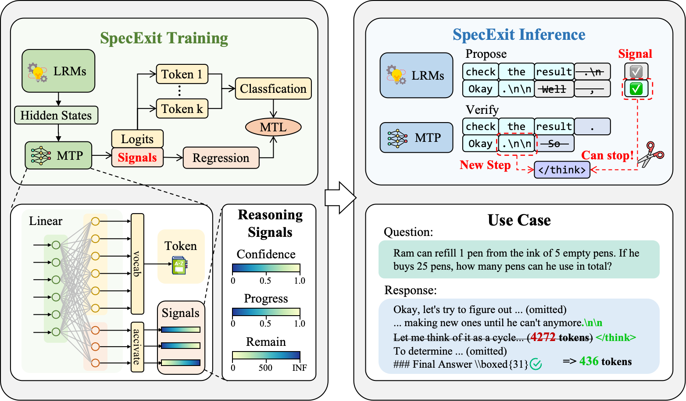
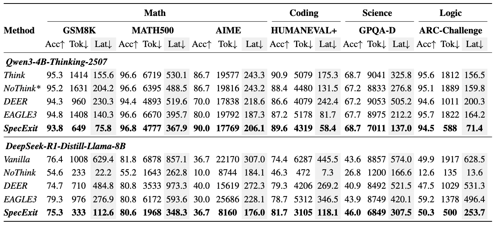

SpecExit#
SpecExit is a novel framework that accelerates large reasoning models (LRMs) by integrating an efficient early-exit mechanism with speculative decoding. It addresses the “overthinking” problem in LRMs, where models produce unnecessarily long outputs, leading to high inference latency.
Our method trains a lightweight draft model to predict not only future tokens but also an early-exit signal directly from its hidden states. This unique design eliminates the probing overhead found in other early-exit methods, achieving significant speedups without compromising task accuracy.
This repository contains the official implementation and resources for the paper: SpecExit: Accelerating Large Reasoning Model via Speculative Exit.
🚀 Abstract#
Despite their strong performance on reasoning tasks, large reasoning models (LRMs) often suffer from overthinking, producing unnecessarily long outputs and incurring high end-to-end latency, a significant limitation to their real-world deployment. To address overthinking, early-exit mechanisms have been proposed to terminate reasoning before typical completion, showing that this approach can effectively shorten generation length with minimal impact on accuracy. However, their reliance on probing mechanisms introduces a detection overhead that limits their end-to-end latency gains and compromises their generalizability across diverse problems. Inspired by the use of hidden states in speculative decoding, we propose SpecExit, a novel framework that predicts both future tokens and an early-exit signal directly from a lightweight draft model without probing overhead. Our method offers significant improvements, reducing average generation length by 66% and achieving a 2.5x speedup in end-to-end latency compared to the speculative decoding baseline, without compromising accuracy. Our method leverages the inherent signals from hidden states to provide effective early-exit signals, suggesting broader use of hidden states for efficient reasoning.
✨ Key Highlights#
Signals Extracted for Early Exit: We derive early-exit signals from hidden features and integrate them into speculative decoding, enabling reliable early exit for efficient reasoning.
General and Practical Framework: We implement SpecExit, a reasoning-aware early-exit framework, in both PyTorch and vLLM, making it easy to deploy across diverse inference environments.
Substantial End-to-End Performance Gains: SpecExit reduces reasoning length by 66% and achieves up to 2.5$\times$ lower latency than speculative decoding while maintaining accuracy.
⚡ Quick Start#
Inference and Evaluation#
To run inference with the trained SpecExit model and evaluate its performance on benchmarks like GSM8K, GPQA, etc., use the spec_benchmark.py script.
python3 tools/spec_benchmark.py \
--base-model-path ${BASE_MODEL} \
--eagle-model-path ${SpecExit_Model} \
--mode eagle \
--num-gpus-total 8 \
--early-stop-method confidence_progress_remain
📈 Results#
Our experiments show that SpecExit significantly outperforms the speculative decoding baseline across multiple reasoning benchmarks. It provides a much better trade-off between accuracy and latency.
📜 Citation#
If you find our work useful in your research, please consider citing our paper:
@article{SpecExit2025,
title={SpecExit: Accelerating Large Reasoning Model via Speculative Exit},
author={Rubing Yang and Huajun Bai and Song Liu and Guanghua Yu and Runzhi Fan and Yanbin Dang and Jiejing Zhang and Kai Liu and Jianchen Zhu and Peng Chen},
journal={arXiv preprint arXiv},
year={2025}
}